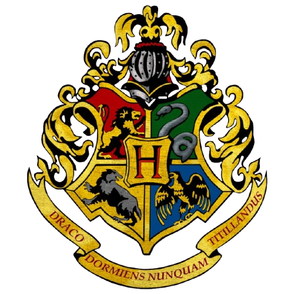
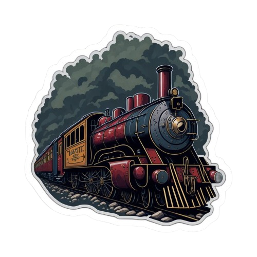
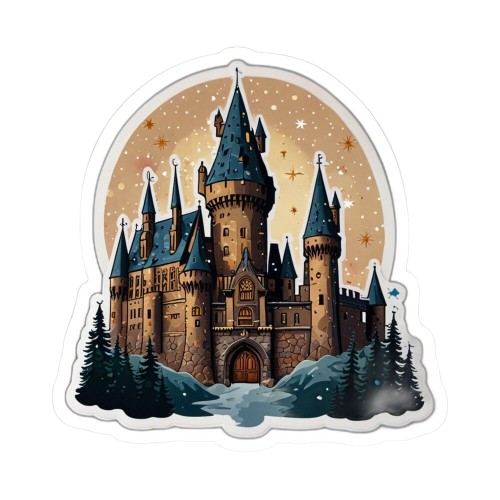
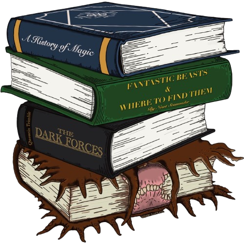
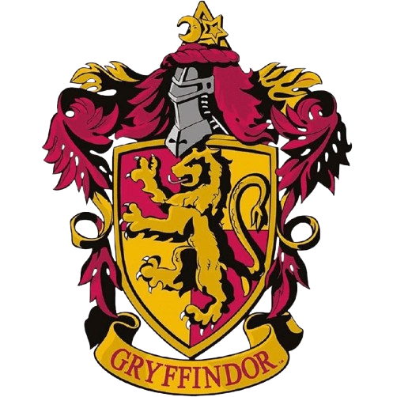
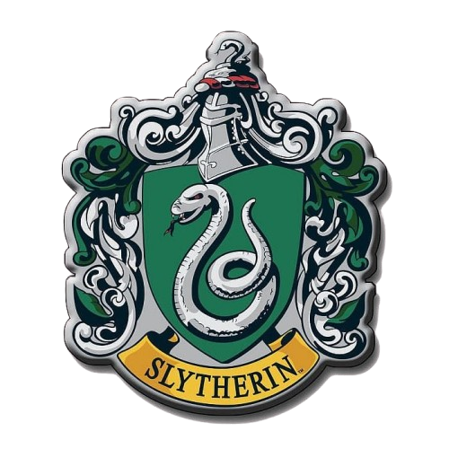
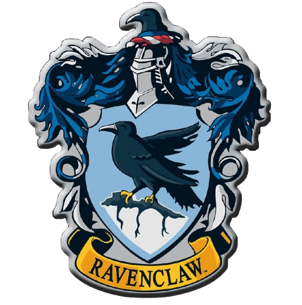

Lepaskan jiwa Muggle-mu. Masuklah ke dunia di mana sapu bisa terbang, potret bisa bicara, dan keajaiban nyata di setiap sudutnya.
Mulai Petualangan ✨Sekolah Sihir terbaik di dunia kini membuka gerbangnya untukmu. Jelajahi ribuan tahun sejarah, pengetahuan mantra, dan rahasia yang tersimpan rapat di kastil.

Ikuti perjalanan Harry dari 'Batu Bertuah' hingga pertempuran akhir di 'Relikui Kematian'.

Pelajari Ramuan rumit, Ramalan masa depan, hingga Pertahanan Terhadap Ilmu Hitam.

Kumpulan mantra, kutukan, dan sejarah penyihir kegelapan yang paling ditakuti.
Di mana topi seleksi akan menempatkanmu? Setiap asrama memiliki nilai dan sejarahnya sendiri.

Keberanian & Keksatriaan

Ambisi & Kecerdikan

Kecerdasan & Kebijaksanaan
Kesetiaan & Kerja Keras
Fakta #1: J.K. Rowling dan Harry Potter berbagi hari ulang tahun yang sama, yaitu 31 Juli.
Fakta #2: Dementor diciptakan sebagai representasi dari depresi yang pernah dialami penulisnya.
Fakta #3: Nama-nama tumbuhan di Herbologi diambil dari buku nyata peninggalan abad pertengahan.
Jangan ketinggalan berita terbaru dari Dunia Sihir. Daftar untuk berlangganan newsletter kami!